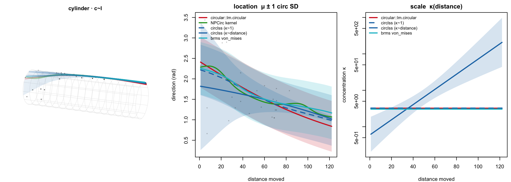
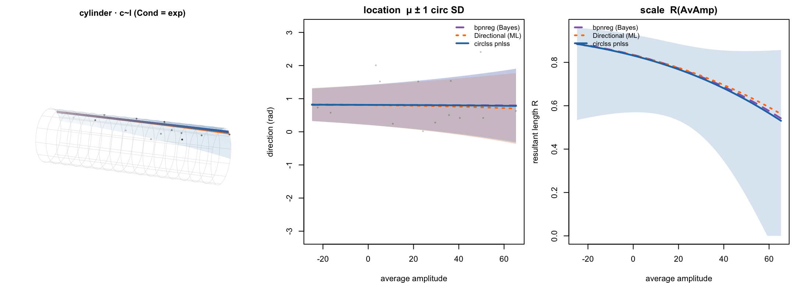
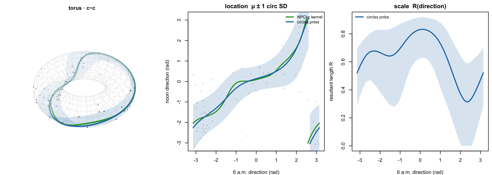
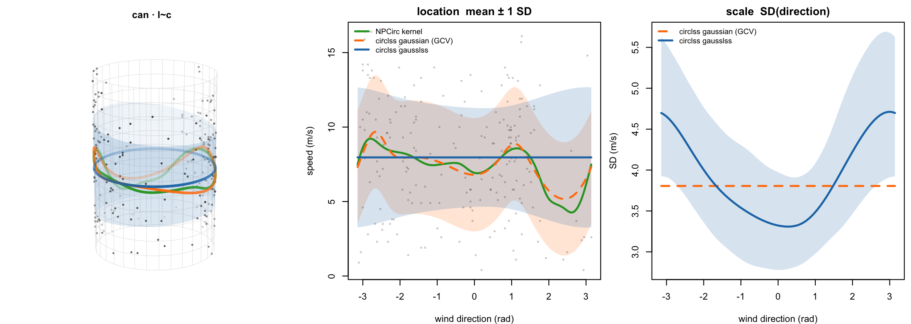
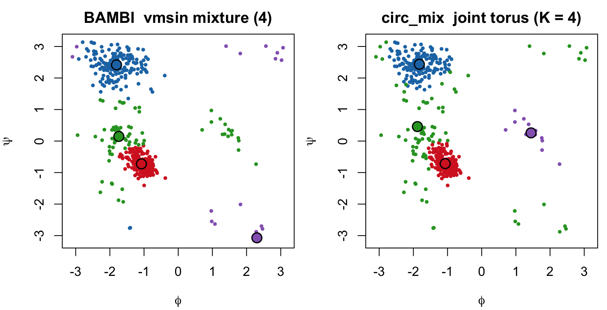

circlss among circular-response regression packages
Source:vignettes/articles/comparison.Rmd
comparison.Rmdcirclss provides capacity to fit distributional
regression for circular responses: every parameter of a
circular distribution gets its own penalized-spline predictor,
REML-selected through mgcv::gam(), across a library of
circular families.
Where circlss sits
| Package | Approach | Inference | Families | Nonlinear effects | Per-parameter | Mixtures | Geometries |
|---|---|---|---|---|---|---|---|
| circlss | mgcv penalized-spline GAMLSS | Freq. (REML/EFS) | 12 | splines (+cyclic) | every param | EM | c~l, c~c, l~c |
| circular | lm.circular |
Freq. ML | vM | linear | location | — | c~l, c~c |
| Directional | spml.reg |
Freq. ML | proj. normal | linear | location (+scale) | — | c~l, c~c |
| bpnreg | bpnr |
Bayes (MCMC) | proj. normal | linear | location (2D) | mixed eff. | c~l |
| brms | von_mises |
Bayes (Stan) | vM |
s()/t2()
|
κ | mixture() |
c~l, c~c |
| NPCirc | kernel (NW/LL) | Nonparam. | vM kernel | kernel | mean only | — | c~l, c~c, l~c |
| BAMBI | fit_angmix |
Bayes/ML | vM, wN, vmsin/cos | none | — | yes | — (density) |
# Every comparator is on CRAN:
install.packages(c("circular", "NPCirc", "bpnreg", "brms", "Directional", "BAMBI"))1. c~l regression: circular response, linear
covariate
Fisher & Lee’s 31 periwinkles: direction moved (circular) on
distance moved (linear) — the shared example of circular
and NPCirc.
library(NPCirc); library(circular)
data(periwinkles)
dist <- periwinkles$distance
dir_c <- circular(periwinkles$direction, units = "degrees") # for NPCirc
peri <- data.frame(distance = dist, direction = periwinkles$direction * pi / 180)circular: a von Mises link
mu = mu0 + 2*atan(b*x); location only, one global
concentration.
lm.circular(y = circular(peri$direction), x = dist, type = "c-l", init = 0)#> Circular-Linear Regression
#> Coefficients: Estimate Std. Error t value Pr(>|t|)
#> [1,] -0.008317 0.001359 6.119 4.7e-10 ***
#> Summary: (mu in radians) mu: 2.426 (0.112) kappa: 3.224 (0.716)NPCirc: a nonparametric conditional-mean curve (Nadaraya–Watson).
kern.reg.lin.circ(dist, dir_c, t = NULL, bw = 12.7, method = "NW")#> Call: kern.reg.lin.circ(x = dist, y = dir_c, bw = 12.7, method = "NW")
#> Data: dist (31 obs.); Bandwidth 'bw' = 12.7 Rho: 0.94circlss: a von Mises GAMLSS.
library(circlss)
b <- circ_gam(list(direction ~ s(distance, k = 5), # mu(distance), penalized smooth
~ distance), # log-kappa LINEAR in distance
data = peri, family = vmlss())
summary(b)
predict(b, newdata = data.frame(distance = quantile(dist, c(0, .5, 1))), type = "response")#> Family: vmlss Link function: tanhalf log
#>
#> Parametric coefficients:
#> Estimate Std. Error z value Pr(>|z|)
#> (Intercept) 1.00525 0.08014 12.543 < 2e-16 *** # mu intercept
#> (Intercept).1 -0.52074 0.56203 -0.927 0.354 # log-kappa intercept
#> distance.1 0.04798 0.01014 4.729 2.25e-06 *** # log-kappa slope on distance
#>
#> Approximate significance of smooth terms:
#> edf Ref.df Chi.sq p-value
#> s(distance) 1 1 20.64 6.4e-06 ***
#>
#> Deviance explained = 47% -REML = 28.222 n = 31
#>
#> mu kappa
#> 0% 1.819 0.623 # near-uniform heading at the shortest distance
#> 50% 1.586 5.399
#> 100% 1.020 206.939 # near-deterministic at the longestbrms: von Mises smooth via Stan. Here
kappa ~ 1: the kappa ~ distance term that
circlss fits (κ → 207) overflows Stan on 31 points, so brms is held at
constant κ.
library(brms)
pb <- transform(peri, direction = atan2(sin(direction), cos(direction))) # (-pi, pi]
brm(bf(direction ~ s(distance), kappa ~ 1), data = pb, family = von_mises(),
chains = 2, iter = 1000, seed = 1)#> Estimate Est.Error Q2.5 Q97.5
#> Intercept 1.323 0.207 0.971 1.797
#> kappa_Intercept 1.084 0.237 0.563 1.488
#> sdistance_1 -2.217 2.507 -7.464 2.828
circular holds κ flat;
NPCirc has no κ; brms, overflowed at
kappa ~ distance, is held at κ~1 — and there circlss(κ~1,
dashed) sits on brms’s mean curve: the same Bayesian smooth, by
REML.2. One distribution, three inference engines — projected normal
bpnreg’s Motor data: 42 hand-movement phases under three
priming conditions. The projected normal writes an angle as
atan2(mu2, mu1) of two linear predictors, the same form
bpnr (Gibbs), spml.reg (ML), and circlss
pnlss (REML) all fit.
fit_b <- bpnr(Phaserad ~ Cond + AvAmp, data = Motor, its = 5000, burn = 1000, seed = 1)
round(coef_lin(fit_b)[, c("mean", "sd")], 3) # bpnreg, Gibbs
X <- model.matrix(~ Cond + AvAmp, Motor)[, -1]
spml.reg(Motor$Phaserad, X, rads = TRUE)$be # Directional, ML
b <- circ_gam(list(Phaserad ~ Cond + AvAmp, ~ Cond + AvAmp), # circlss pnlss, REML
data = Motor, family = pnlss())
summary(b)#> bpnreg coef_lin (component I rows 1-4, II rows 5-8) Directional $be
#> mean sd cos(y) sin(y)
#> (Intercept) 1.337 0.452 (Intercept) 1.338 1.401
#> Condsemi.imp -0.476 0.637 Condsemi.imp -0.382 -1.126
#> Condimp -0.605 0.656 Condimp -0.522 -0.907
#> AvAmp -0.010 0.012 AvAmp -0.009 -0.011
#> ... # circlss pnlss summary:
#> (Intercept).1 1.397 0.438 (Intercept).1 1.39719 z = 3.192 0.0014 **
#> Condsemi.imp.1 -1.162 ... Condsemi.imp.1 -1.16182 z = -1.953 0.051 .
#> Deviance explained = 12.9% -REML = 65.46 n = 42
Cond + AvAmp could become Cond + s(AvAmp) — a
smooth neither neighbour offers.3. c~c circular-circular regression
wind direction, 6 a.m. to noon
data(wind)
i6 <- seq(7, 1752, by = 24); i12 <- seq(13, 1752, by = 24) # daily 06:00, 12:00
wr <- function(a) atan2(sin(a), cos(a))
dcc <- data.frame(w6 = wr(wind$wind.dir[i6]), w12 = wr(wind$wind.dir[i12]))
kern.reg.circ.circ(circular(dcc$w6), circular(dcc$w12), bw = 6.1, method = "NW")
# winding response -> projected normal (a von Mises mean can't follow a heading
# that goes round the circle); mean AND concentration each a cyclic smooth:
b_cc <- circ_gam(list(w12 ~ s(w6, bs = "cc"), ~ s(w6, bs = "cc")),
data = dcc, family = pnlss())
summary(b_cc)$s.table#> Family: pnlss n = 73 Deviance explained = 46%
#> edf Ref.df Chi.sq p-value
#> s(w6) 2.894 8 33.66 <2e-16 *** # mean direction smooth
#> s.1(w6) 2.974 8 31.04 <2e-16 *** # concentration smooth
pnlss fits the
mean (edf 2.9) and the concentration (edf 3.0), both
p < 2×10⁻¹⁶ — the varying spread (right) is the part the
kernel has no parameter for.4. l~c linear-circular regression
does wind speed depend on direction?
data(speed.wind2)
sw <- na.omit(data.frame(dir = speed.wind2$Direction, speed = speed.wind2$Speed))
sw$rad <- wr(sw$dir * pi / 180)
kern.reg.circ.lin(circular(sw$dir, units = "degrees"), sw$speed, method = "LL")
# model BOTH the mean and the SD (gausslss, tau = 1/sigma) of speed by direction:
b_lc <- circ_gam(list(speed ~ s(rad, bs = "cc"), ~ s(rad, bs = "cc")),
data = sw, family = gausslss())
# mean alone under GCV (the less-conservative selector a kernel resembles):
b_gcv <- circ_gam(speed ~ s(rad, bs = "cc"), family = gaussian(), method = "GCV.Cp", data = sw)
summary(b_lc)$s.table; summary(b_gcv)$s.table#> gausslss edf Ref.df Chi.sq p-value
#> s(rad) [mean] 0.001 8 0.001 0.465 # mean: flat under REML
#> s.1(rad) [SD] 2.016 8 8.027 0.009 # SD: varies with direction
#> gaussian (GCV) edf Ref.df F p-value
#> s(rad) [mean] 6.436 8 1.815 0.028 # mean: wiggly under GCV
5. Mixtures — BAMBI vs circ_mix
Not a regression: BAMBI fits fixed-form mixtures of
toroidal densities. For the 8TIM protein’s 490 (φ, ψ) backbone
dihedrals, a four-component bivariate sine von Mises captures the
Ramachandran basins. circ_mix reaches the same clusters by
EM over circular GAMs, each component a conditional f(ψ | φ) × marginal
f(φ).
library(BAMBI); data(tim8)
fit_angmix("vmsin", tim8, ncomp = 4, n.iter = 500, n.chains = 1) # BAMBI, HMC
circ_mix(list(psi ~ cos(phi) + sin(phi), phi ~ 1), # circ_mix, EM
data = tim8, family = vmlss(), K = 4)#> BAMBI: 4 component vmsin mixture, 490 obs, fitted via HMC.
#>
#> Finite mixture of circular GAMs (circ_mix) -- joint torus density
#> family vmlss | K = 4 components | 490 obs BIC = 1751.77
#> components (MAP): pi = 0.293 / 0.474 / 0.200 / 0.032 (n = 152 / 236 / 86 / 16)
#> converged in 95 iterations; restart basin hits 1/10.
BAMBI is Bayesian and covariate-free; circ_mix
is built on circ_gam, so the components that here cluster a
static density can instead carry the smooths and covariates of
§1–3.